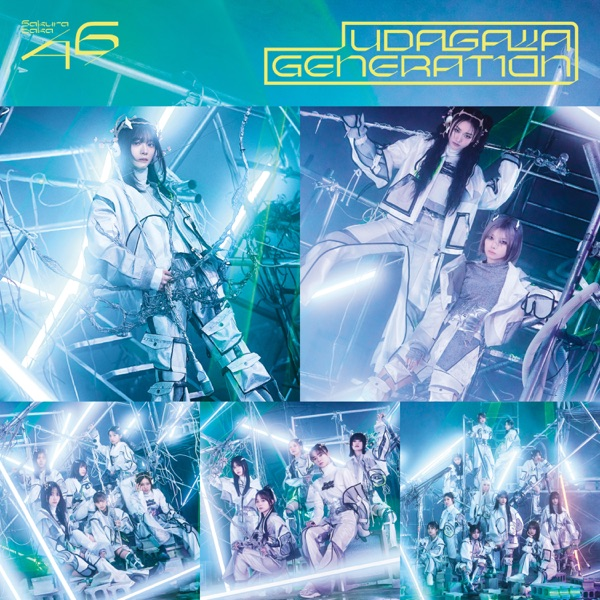
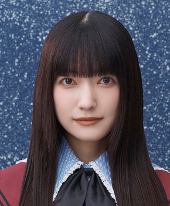

サカミチ
サカミチUDAGAWA GENERATIONうだがわじぇねれーしょん

初収録リリース「UDAGAWA GENERATION」のジャケット
櫻坂46
発売日：2025-02-19
収録：UDAGAWA GENERATION（11thSG）
種別：表題曲
センター：森田ひかる
作曲：シライシ紗トリ
編曲：APAZZI
ライブ披露：30件
フォーメーション
上が後列、下が前列です。色付きがセンター。（公式発表に基づく）
石森璃花
 村井優
村井優 松田里奈
松田里奈
大園玲向井純葉
村山美羽
 山下瞳月
山下瞳月 田村保乃
田村保乃守屋麗奈
 谷口愛季
谷口愛季 的野美青
的野美青 山﨑天
山﨑天 森田ひかる
森田ひかる 藤吉夏鈴
藤吉夏鈴参加メンバー（14名）
大園玲、田村保乃、藤吉夏鈴、松田里奈、森田ひかる、守屋麗奈、山﨑天、石森璃花、谷口愛季、的野美青、向井純葉、村井優、村山美羽、山下瞳月
この曲が披露されたライブ（30件）
新しい順に20件まで表示しています（全30件）。
同じリリースの曲
UDAGAWA GENERATION、Nightmare症候群、Nothing special、紋白蝶が確か飛んでた、行かないで、ULTRAVIOLET、やるしかないじゃん